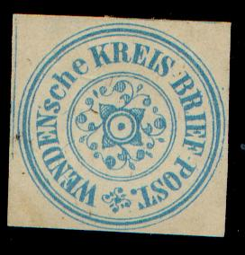
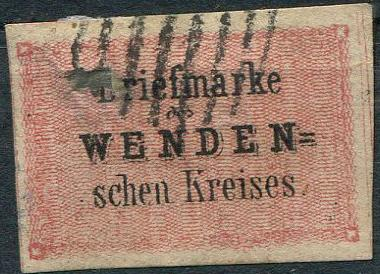
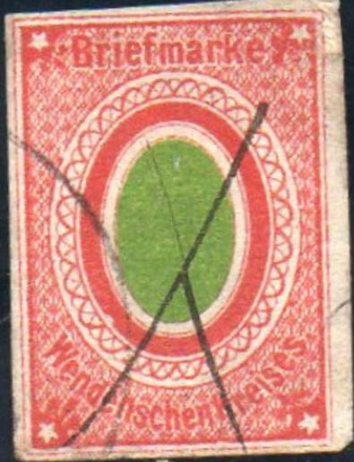
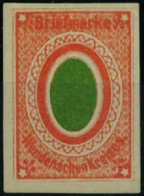
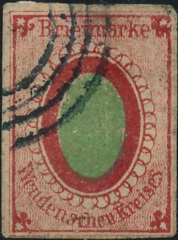
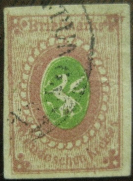
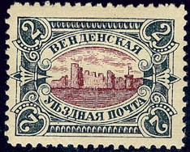

Black on green stamp; forgery?
Livonia
Return To Catalogue - Russia - Latvia
Note: on my website many of the
pictures can not be seen! They are of course present in the
catalogue;
contact me if you want to purchase the catalogue.

(2 Kopecks) blue
Value of the stamps |
|||
vc = very common c = common * = not so common ** = uncommon |
*** = very uncommon R = rare RR = very rare RRR = extremely rare |
||
| Value | Unused | Used | Remarks |
| 2 k | *** | - | |
Black on green stamp; forgery?


Genuine stamps
(Reduced size, image obtained from a Sherrystone auction)
(2 Kopecks) red, inscription black (Briefmarke) (4 Kopecks) green, inscription black (Packenmarke)
Value of the stamps |
|||
vc = very common c = common * = not so common ** = uncommon |
*** = very uncommon R = rare RR = very rare RRR = extremely rare |
||
| Value | Unused | Used | Remarks |
| 2 k | RR | RR | Reprints exist (***) |
| 4 k | R | R | Reprints exist (***) |
Most stamps are pencancelled, although I have seen some with a numeral dot cancel '390' of Wenden.
Forgeries, examples (by the way, I'm not quite sure if the above stamps are genuine):

nietweergeven.jpg (forgeries, reduced sizes)

Another forgery.
Probably a forgery as well

Most likely a forgery.
The next stamps are reprints:


The reprints have a "-" behind "WENDEN",
while the original stamps have a "=" behind it. Also,
the "k" of 'Briefmarke' is different. If I'm well
informed these reprints were made on the order of the postmaster.

Fournier forgeries as found in the 'Fournier Album of Philatelic
Forgeries'.

Dubious item.

Green stamp with the text slanting!

This forgery has all "S"s in "schen Kreises"
different.

Another forgery with very strange "S"s.


Type 1, not sure if the last stamp is genuine, the word
"Briefmarke" is closer to the ornaments below it.


Type 2



Type 3
2 k red and green
Value of the stamps |
|||
vc = very common c = common * = not so common ** = uncommon |
*** = very uncommon R = rare RR = very rare RRR = extremely rare |
||
| Value | Unused | Used | Remarks |
| 2 k | R | R | Type 1: with extra green line around green oval Reprints: *** |
| 2 k | *** | *** | Type 2: without extra green line (1866) |
| 2 k | *** | *** | Type 3: different elliptic ornaments(?) (1870) Reprints: ** |
A forgery exists with wrong inscription "Wendeschen kreises" instead of "Wendenschen kreises":

Forgery with wrong inscription "Wendeschen" instead of
"Wendenschen"

I've been told that this is a reprint


Very dubious item, the small circles touch the containing ellipse
just below the "m" of "Briefmarke", the
"a" of this word is different. This might be an
'official reprint'?

This is an 'official reprint' with an extra red line around the
green ellipse.
Sperati forgeries (here 'black proofs')
Sperati forgery ('black proof')
Possibly a forgery
 

Dubious stamps with an even more dubious cancel.

Most likely a reprint sheet made in the 1890's.

2 k red and green
Value of the stamps |
|||
vc = very common c = common * = not so common ** = uncommon |
*** = very uncommon R = rare RR = very rare RRR = extremely rare |
||
| Value | Unused | Used | Remarks |
| 2 k | R | R | Reprints: *** |


Forgery with "Wendeschen" instead of "Wendenschen".
Next to it a forgery of the previous issue, most likely made by
the same forger. The "W" of this word touches the row
of semicircles. The first two forgeries appear to have a
"K.K.ZEITUNGS STEMPEL" cancel, which also exist on
forgeries of many other countries.
A forgery exists with wrong inscription "Wendeschen" instead of "Wendenschen" (see picture above). The dragon should stand on a ground of wavy lines.


Another forgery type, the wings are pointing upwards. There is an
additional red line all around the green ellipse. These could be
'official reprints'?


Another forgery with no lines below the dragon. The last image
shows a very similar stamp of the previous issue.
Sperati forgeries (here 'black proofs')

Possibly other forgeries

Possibly a reprint sheet, made in the 1890's, note that the same
flaws appear as in the reprint sheet of the previous issue. For
example the red dot of ink under the "ar" of
"Briefmarke" in the upper left stamp. All stamps have a
tiny extra 'loop' on the right hand side of the tail of the
animal.
The forger Oswald Schröder made a forgery of this stamp. I don't know the distinguishing characteristics, but an image can be found on the cover of the book 'The Oswald Schröder Forgeries' by Robson Lowe.
2 k red and green 2 k green and red 2 k green and red (other type) 2 k black, red and green
Value of the stamps |
|||
vc = very common c = common * = not so common ** = uncommon |
*** = very uncommon R = rare RR = very rare RRR = extremely rare |
||
| Value | Unused | Used | Remarks |
| 2 k red and green | *** | *** | 1872 |
| 2 k green and red | ** | ** | 1875, reprints exist: * |
| 2 k green and red | * | * | Other type, '2' in circles in corners, 1878 Reprints exist: * |
| 2 k black, red and green | ** | * | 1880 |
Forgeries, example:

I don't know anything about the above forgery, except that it is a forgery!


I've been told that these imperforate 2 k black, red and green
stamp with inverted centers are genuine.
However, they are also imperforate. Possibly printer's waste?
Apparently, Hirschheydt (who was also responsable for some
reprints) possesed a whole sheet of these 'errors'.

2 k grey and brown
Value of the stamps |
|||
vc = very common c = common * = not so common ** = uncommon |
*** = very uncommon R = rare RR = very rare RRR = extremely rare |
||
| Value | Unused | Used | Remarks |
| 2 k | * | * | |


Imperforate stamp and imperforate stamp with double centre
impression (printer's waste or proofs?)

Two imperforate proofs in different colours from the final stamp
issued.
A mystery stamp, bogus issue or essay?
Wenden only cancelled it stamps with a pencancel (it did not possess its own cancelling device). However, when used with Russian stamps, sometimes a Russian cancel was applied to the stamps.
Stamp of Russia, used together with a stamp of Wenden:
(Reduced size, pencancel on Wenden stamp, Russian cancel on
Russian stamp, also obliterating the Wenden stamp)
Some reprints seem to have been made by Campenhausen and Hirschheydt. If anybody possesses information on how to distinguish them, please contact me!
I've been told that this is a reprint

A reprint-essay made by Campenhausen.
I guess some of the 'official reprints' shown above were made by the above mentioned gentlemen.
Printer proofs including those for reprints?
Another sheet with proof of reprints (except for the last row).
Note the upwards pointing wings of the animal.
Stamps - Timbres-Poste - Briefmarken

{kind=link}
{kind=link}
{kind=link}
{kind=link}
{kind=link}
{kind=link}
{kind=link}